A continuación se espesifican las diversas propiedades que alteran el comporatamiento o aparencia de las cajas HTML
Background-color
-
Define el color de fondo de un elemento, Esta propiedad acepta multiples formatos de color colo lo son:
- Palabras clave
- Colores del sistema
- RGB hexadecimal
- RGB numérico
- RGB porcentual
Ejmeplo

Padding
-
El padding consiste en la distancia entre la caja y el conteido de esta, se divide en las cuatro caras del elemento:
Padding left: distancia borde izquierdo con el contenido
Padding top: distancia borde superior con el contenido
Padding right: distancia borde derecho con el contenido
Padding botton: distancia borde Inferior con el contenido
Padding se trata de una propiedad con multiples formas de definirla en CSS
-
Se puede asignar un valor a cada cara del elemento por separado:
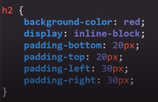 -
Tambien es posible generalizar y aplicar un unico valor para todas las caras del elemento:
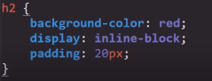 -
Otra opción es la de definir un valor para el eje Y y otro para el eje X de la sigute forma:
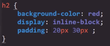Nota: en el caso de padding el primer valor define el eje Y y el segundo corresponde al eje X
-
La ultima alternativa al declarar el padding consiste en declarar un valor diferente para cada cara del elemento en el mismo uso de la propiedad, de la siguite forma:
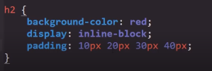El orden al signar el valor de las caras consiste en que el primer valor se asigna al top y posterior mente se coninua con las siguites cara en el sentido de las agujas del relog.
Nota: si se da el caso de que no se asigna alguna de las caras com en esta imagen:
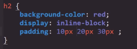Si no es definido el valor de alguna de las dos caras del eje en cuestión el navegador lo resuleve aplicando el valor de la cara que si se decreto a todo el eje.
Height y Width
-
Estas propiedades definen las dimenciones en alto (height) y ancho (width) del elemento en cuestión.
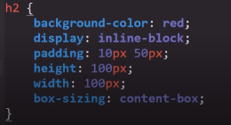Tener en Cuenta
Un aspecto que es util recordar es que cierta propiedad puede modificar el conportamiento de height y de width, esta se trata de box-sizing la cual define el que se tiene en cuenta para
Box-sozing
-
Esta propiedad defiene el que aspectos del elemento se tomaran en cuenta para definir las dimenciones del elemento, es decir define el comportamiento de algunas propiedades para que estas puedan o no modificar las dimenciones definidas por height y width. Para esto cuenta con dos valores con esta función:
-
Content-box
Este valor define que a las dimenciones establecidas del elemento se ajusten acorde al contenido de este, es decir el espacio que ocupa el contenido se sumara al valor definido en height y width
Por lo tanto en este ejemplo las dimenciones de este elemento seran las definidas por height y width más las dimenciones de contenido y el padding resultando en un elemento que realmente excede los 100 X 100 definidos por height y width.
-
Border-box
Este valor define que el contenido no se tomra en cuanta para definir las dimenciones de la caja por lo tanto sin importar el que las dimenciones totales del elemento seran las que establescan height y width.
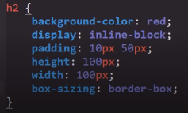De esta forma
-
Margin
-
Se trata de la distancia de separación entre la caja y los demas elementos, su funcionamiento es identico al de padding por lo tanto ambien cuenta con las mismas formas de definir los valores de esta propiedad:
-
Se puede asignar un valor a cada cara del elemento por separado:
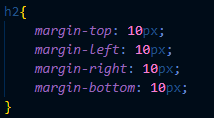 -
Tambien es posible generalizar y aplicar un unico valor para todas las caras del elemento:
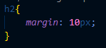 -
Otra opción es la de definir un valor para el eje Y y otro para el eje X de la sigute forma:
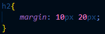 -
La ultima alternativa al declarar el margin consiste en declarar un valor diferente para cada cara del elemento en el mismo uso de la propiedad, de la siguite forma:
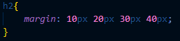
Nota: si se da el caso de que no se asigna alguna de las caras como en esta imagen:
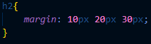Si no es definido el valor de alguna de las dos caras del eje en cuestión el navegador lo resuleve aplicando el valor de la cara que si se decreto a todo el eje.
Margin : auto
Se trata de un valor especial que puede adquirrir esta propiedad, al aplicarla le indica al navegador que de forma automatica realise los calculos necesarios para centrar el elemento de forma orizontal, ese es el efecto de margin: auto sentrar los elementos de tipo bloque que no se encuentren posicionados con position, segun el contenedor en que se encuentren, siempre y cuando este valor se aplique este valor de forma orizontal, ya que verticalmente no funciona.
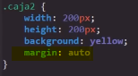 -
Border-radius
-
Se trata de otra propiedad con una función simple, permite redondear las esquinas de los elementos, despues de todo todos los elementos HTML estan compuestos por cajas, acepta caualquier tipo de medida CSS, incluyendo porcentajes (%).
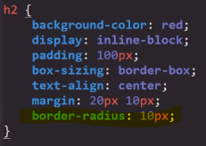Es util tener en cuenta que para redondear un elemento al maximo esto se logra con un valor de 50%
Ejmeplo
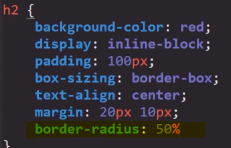resultando
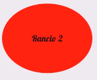Border-radius al igual que otras propiedades cuenta con multiples formas de declararse en CSS.
-
Cueta con multiples propiedades las cuales permiten asignar un valor a cada esquina del elemento
-
Tambien se puede generalizar un solo valor para todas las caras del elemento, tal y como se hozo en la imagen anterior
-
Por ultimo es posble el definir un valor para cada cara del elemento desde un mismo uso de la propiedad
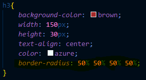Nota: Al definir los valores de esta forma el primero corresponde a la esquina superior izquierda y de allí se continua en el sentido de las agujas del relog, finalizando con el ultimo valor correspondiendo a la esquina inferior izquierda.
-
Border
-
Esta propiedad como su nombre lo indica define las caracteriticas del borde del elemento, se trata de una propiedad "cortada", lo que significa que existen diferentes formas de aplicar la propiedad.
De hecho existen multiples tipos de opciones al emplear este atributo, no opstante las caracteriticas que debe poseer un border más relevantes son:
-
Grosor: Se refiere al grosor del borde en si, para esta función border acepta los diferentes tipos de medidas CSS
-
Style: Este atributo define el tipo de borde que se aplicara al alemento, sexisten multiples tipos:
-
Solid: Se trata del valor más usado, genera un borde completo en el elemento:
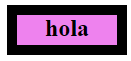 -
Dashed: Este valor genera un borde puntuado, cuadrado.
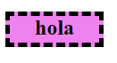 -
Dotted: Genera un margen puntuado, redondeado.
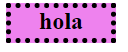 -
Double: Genera un borde doble.
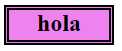 -
Groove: Genera un borde con el siguiente patron:
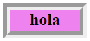 -
Hidden: Hidden significa oculto, este valor oculta el borde, se emple en los casos que sea necesario el ocultar el borde de algun elemento.
-
Inset: Denera un borde con el siguiente patron:
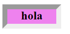 -
None: Literamente define que el elemento no posea ningun border, se diferencia de hidden ya que este ultimo oculta el borde, sin embargo none directamente lo elimina del elemento.
-
Outset: Genera un borde como el de inser pero invertido
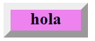 -
Ridge: Genera un borde como el de groove pero invertido.
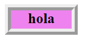
-
-
Color: El ultimo de los valores relevantes de un border es el color que poseera dicho vorde
Simplificación
Como tal border posee una propiedad individual para cada uno de estos valores sin embargo existe una forma de emplear todas las porpiedades anteriormente nombradas facilmente, optimizando el codigo CSS.
Esta practica con siste en definir el ancho, border (ancho), el style (estilo) y el color del borde en una sola propiedad, de la siguiente manera:
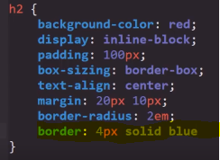Como se puede ver es posible definir más de una caracteritica con el uso de la propiedad border, ahorranddo espacio y tiempo al no usar las propiedades espesificas de cada atributo, de este modo tambien pueden usarse las propiedades alternativas como border-top, left right o buttom, si se declaran solas lo mejor es declarar todos los valores en estas.
Nota: Al hacer esto realmente no es importante el orden en el que se daclaran las caracteriticas del borde, puede ir el color de primero o el estilo o incluso el grosor, todos los casos son igual de correctos.
-
Outline
-
Un aspecto a tenr en cuenta al plantear los estilos de una web es el espacio en pantalla que cada propiedad o elemento requiere para poder mostrarse al usuario, por ejmplo:
La porpiedad border, los pixeles que este puede llegar a ocupar tiene que tomarse de algun lugar ya sea del exterior de la caja aumentando el tamaño de esta (como con el valor por defecto de los navagadores "box-sizing: content-box;) o tomarse del interiro de esta reducuendo así el espacio del contenido (como con el valor aplicado en el archivo "normalize" "box-sizing: border-box;), de cualquier forma es necesario el sustrar ese espacio de algun lugar.
El outline es una porpiedad obcional al border, su funcionamiento y forma de implementarse es exactamente igual, a la propiedad border con una notoria diferencia en su concepto, outline se diferencia de border en que este no "ocupa un espcio" en el modelo de cajas, es decir outline realmente no altera las dimenciones ni la ubicación de ningun elemento, ni siquiera en el que se estaplicando, por lo tanto esta propiedad puede apreciarse, pero el espacio en pantalla que esta ocupa para poder mostrarse pudiese decirse que es ficticio ya que no es tomado en cuenta por ningun elemento o propiedad, por lo tanto esta propiedad se puede visualizar sin tomar espacio de ningun elemento.
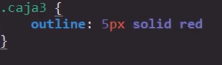A contincuación se muestra una comptaración de outline y otra de border
Border:
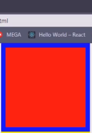Outline:
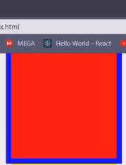Como se puede observar en esta comptaración border desplaza el elemento hacia abajo para poder mostrar todas las caras de este al usuario, esto no pasa con outline, ya que el espacio que este ocupa "no exite" la caja en cuestión se mantiene en su posición inicial, este efecto se mantiene sin importar se el outline es cubierto por algun elemento
Un ejmplo practico de esta propiedad es el resaltado que se aplica el seleccionar un input, el cual por defecto se genera utilizando outline:
Box-shadow
-
Esta propiedad genera una sombra para el elementos en cuestión, y para funcionar esta propiedad necesita diferentes tipos de datos:
-
El primer valor a ingresar se trata de la ubicación de la sombra en el eje X
-
El segundo valor a ingresar se trata de la ubicación de la sombra en el eje Y
-
El tercer valor se trara del desenfoque, es decir el tamaño de la sombra
-
Como cuarto valor se ingresa el ancho del vorde de la sombra (por lo general a esta caracteritica se le asigna un valor de 0)
-
El quinto y ultimo valor consiste en el color de la sombra, aligual que otras propiedades esta acepta los diferentes formatos de color CSS
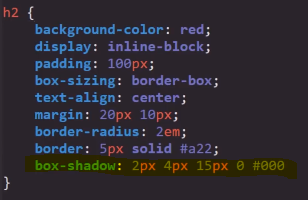
Nota: Si se decea un efecto más intenso es posible repetir efecto las veces que hagan falta añadiendo nuevamente los valores siempre y caundo se respeten dos cosas, la primera es añadir una coma (,) entre cada repetición de los valores y la segunda es culminar la declaración de la propiedad con el punto y coma (;)
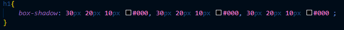 -
Transform
-
Una de las funciones de esta porpiedad es rotar los cotnedndores, para esto definimos un valor en deg, esta es la medida que representa a los grados en CSS por lo tanto un valor de "45 deg" es igual a declarar: "rotar el contenedor 45º."
Por lo tanto un codigo como este:
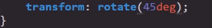Resulta en esto:
Overflow
-
Esta propiedad se aplica en aquellos casos que el cotenido excede a su cotenedor, por lo que evita que este sobresalga, en su lugar incluye todo el conteido dentro de este, y genera una barra de desplazamiento vertical o orizontal para que le sea posible a usuario desplaserse a lo largo y ancho del contenido.
En otras palabras el efecto de esta propiedad es el de forzar que todo el contenido de la paguina se elmacene dentro del elemento sin que este altere sus dimenciones o su posición, simplemente el contenido que no se pueda visualizar permanecera oculta, y genera las barras de desplazamoento vertical y orizontal para hacer posible navegar dentro de este.
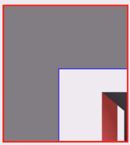Como tal esta propiedad posee dos variantes overflow-x y overflow-y cada una genera una barra de desplazamiento en su respectivo eje, sin embargo su efecto puede ser logrado perfectamente con la propiedad acortada overflow, de cualquier forma todas estas propiedades cuentan con los mismos valores:
-
Visible: Se trata del valor por defecto de la propiedad, permite que el contenido sobresalga del elemento
-
Auto: incluye a todo el contenido dentro del elemento y generara las barras de desplazamiento solo si es necesario, de lo contrario no lo hara
-
Scroll: Este valor al igual que auto incluye a todo el contenido dentro del elemento, pero con la diferencia de que fuerza la generación de las barras de desplazamiento X y Y aún si no son necesarias
-
Hidden: Este valor aculta la barra de desplazamiento, se utiliza solo cuando se desea que unicamente sea vicible una de estas barra, ya que al usar scroll ambas lo seran, entonces se puede asignar por ejemplo overflow-x: hidden; y por otro lado overflow-y: hidden; de ese modo solu una de las barras sera visible por defecto
Ejemplo
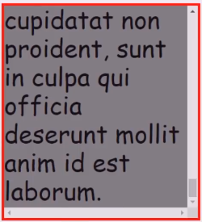 -
Float
-
Se trata de un viejo recurso CSS, ya que en los inicios de la web las paguinas web se estructuraban basandose en tablas y float, en la actualmente existen formás mejores de cumplir con muchas de las funciones de esta porpiedad, no obstante existe una caracteritica que en ciertas circunstancias pudiese ser util
La propiedad float gennera el siguiete efecto sobre la interacción entre los textos y las imagnes:
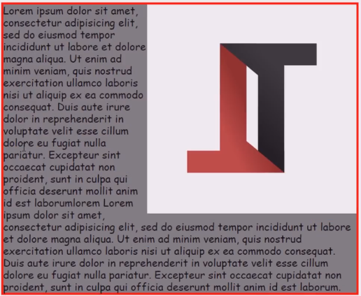Este efcto es logrado unicamente con el siguiete codigo:
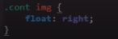Es decir aplicando la propiedad Float en la imagen, definiedo la dirección en la que se desea que se ubique, esta propiedad posee los siguites valores:
Left: Ubica el elemento hacia la izquierda
Right: Ubica el elemento hacia la derecha
Nota: Posee más valores pero no son relevantes actualmente.
Sin embargo para lograr ese efecto se requieren cumplir ciertas condiciones:
-
Tanto el texto como la inagen deben estar dentro del mismo contenedor
-
En el codigo HTML el primer elemento debe ser la imagen
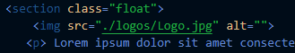 -
El atributo float debe estar definido en la imagen, con un valor de left o right
De ese modo se puede lograr dicho efecto en la intenracción del texto y la imagen, actualmente este es de los pocos si no es que unico uso que tiene la propiedad flot que sea digna de mencionar.